Convolution written from scratch, then used to find edges, sharpen
photographs, hide one image inside another, and join two images
along a seam you cannot see.
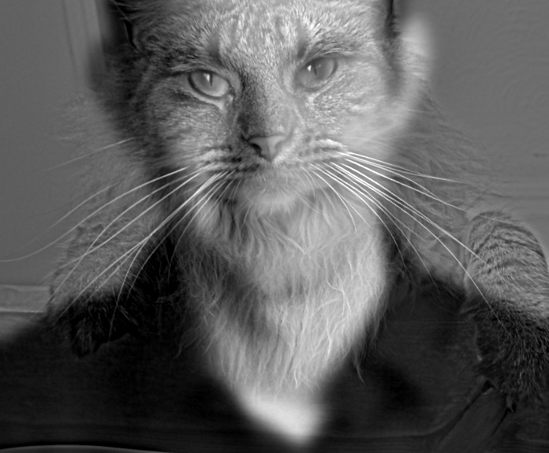
One hybrid image at four sizes. Up close, Nutmeg's fur and whiskers
dominate. Shrinking the image is like stepping back: fine detail falls
below what the eye resolves, and Derek appears.
Two ways to read an image
An image is a grid of pixels, and equally a sum of sinusoids of
different frequencies. Convolution links the two readings: sliding a
kernel across the pixels multiplies every frequency by the kernel's
frequency response. Part 1 builds that operation and measures
gradients with it. Part 2 uses the same filters to move energy
between frequency bands.
Low frequencies carry broad shape, shading, and color. Gold marks low-pass filters.
High frequencies carry edges, texture, and noise. Blue marks high-pass filters.
Part 1.1
Convolution from scratch
Both implementations use NumPy only. They pad the image with zeros
and flip the kernel, so they compute a true convolution rather than a
correlation. For 'same' output the image is padded by
\(\lfloor k/2 \rfloor\) on each side; for 'full' output
by \(k-1.\) The four-loop version visits every output pixel and every
kernel tap, accumulating one product at a time. The two-loop version
keeps the pixel loops but multiplies the whole window by the flipped
kernel in a single NumPy expression.
def convolve2d_4loop(image, kernel, padding='same'):
padded_image, flipped_kernel, output_height, output_width = \
_pad_and_flip(image, kernel, padding)
kernel_height, kernel_width = kernel.shape
output = np.zeros((output_height, output_width))
for i in range(output_height):
for j in range(output_width):
total = 0.0
for m in range(kernel_height):
for n in range(kernel_width):
total += padded_image[i + m, j + n] * flipped_kernel[m, n]
output[i, j] = total
return output
Two loops
def convolve2d(image, kernel, padding='same'):
padded_image, flipped_kernel, output_height, output_width = \
_pad_and_flip(image, kernel, padding)
kernel_height, kernel_width = kernel.shape
output = np.zeros((output_height, output_width))
for i in range(output_height):
for j in range(output_width):
region = padded_image[i:i + kernel_height, j:j + kernel_width]
output[i, j] = np.sum(region * flipped_kernel)
return output
Color images go through the same function once per channel. Inputs are
cast to float64, which is why both versions match
SciPy to round-off.
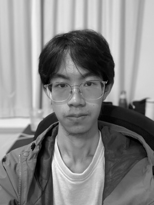
My picture in grayscale, 400 × 300.
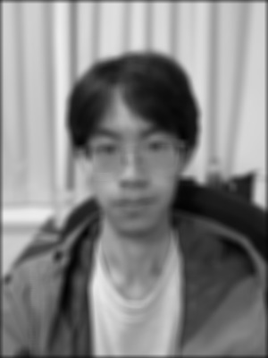
9 × 9 box filter (all taps 1/81).
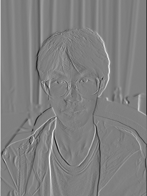
\(D_x = [1, 0, -1].\) Mid-gray is zero.
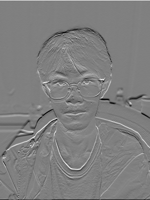
\(D_y = D_x^{\top}.\) Mid-gray is zero.
Wall-clock time on the 400 × 300 image and maximum difference from scipy.signal.convolve2d(mode='same', boundary='fill')
Kernel
Four loops
Two loops
SciPy
Max |Δ|, four loops
Max |Δ|, two loops
9 × 9 box
1.750 s
0.271 s
0.0113 s
8.9 × 10⁻¹⁶
6.7 × 10⁻¹⁶
\(D_x,\) 1 × 3
0.079 s
0.244 s
0.0013 s
0
0
\(D_y,\) 3 × 1
0.088 s
0.244 s
0.0015 s
0
0
Runtime
For the 81-tap box filter, vectorizing the window makes the two-loop
version 6.5× faster than four loops, and SciPy's compiled loop is
another 24× faster still. The order flips for the 3-tap
derivatives: there the four-loop version wins, because each NumPy
call in the two-loop version costs more fixed overhead than three
scalar multiply-adds. Vectorizing pays off only when there is
enough work inside each call.
Boundaries
My functions and SciPy's boundary='fill' both treat
pixels outside the image as zero, so the results agree to
floating-point round-off. Zero is not a neutral value, though. The box
filter averages black into the border, and \(D_x\) reports a false
edge along the left and right sides. SciPy also offers
'symm' (mirror) and 'wrap' (periodic).
I use mirroring everywhere after Part 1.1.
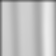
Zero fill, top-left 80 × 80 corner. Across the full width, the top four rows average 0.550.Mirrored border, same crop. Across the full width, the top four rows average 0.768.
With \(D_x=[1,0,-1],\) convolution gives
\((I*D_x)(x,y)\) \(=I(x+1,y)-I(x-1,y)\): positive where the image gets
brighter to the right, negative where it gets darker. \(D_y\) does
the same downward. The gradient magnitude combines the two partial
derivatives pixel by pixel. It is large wherever intensity changes
quickly in any direction and does not care which direction. An edge
map is that magnitude thresholded.
The provided PNG has a white padding frame: seven rows at the top,
five columns on the right, and one row or column on the other two
sides. Left in, every detector reports the frame as the strongest edge
in the picture. I crop the image to its 534 × 534 content first.
4.1% of pixels: the grass is essentially gone, and the man, camera, and tripod stay continuous. This is the chosen threshold.
Choosing the threshold
On intensities in [0, 1], half of all pixels have a gradient
magnitude below 0.016, and 90% fall below 0.140. The grass
produces a dense band of responses up to about 0.25, overlapping the
contrast of the faint skyline. No single threshold on this noisy
magnitude separates the two. I chose 0.28, which removes the grass
and keeps every major contour, and accepted losing part of the
distant buildings.
Part 1.3
Derivative of Gaussian
The finite-difference edges are noisy because differentiation
amplifies high frequencies, and noise is mostly high frequency. I
smoothed first with a Gaussian \(G\) (σ = 2, 13 × 13). It is built from
cv2.getGaussianKernel as the outer product of the 1D
kernel with itself. Then I repeated Part 1.2 on the blurred image.
No grass noise. The texture is averaged away before it is differentiated. At 0.10 the tripod legs stay continuous against a clean background, and the colonnade and curved roof on the horizon come through as unbroken lines. The faint tower and the building next to it are still lost: blurring lowers their contrast along with the grass (the tower reaches 0.12 only at its tip). Smoothing eases the Part 1.2 trade-off; it does not remove it.
Smaller magnitudes. Blurring spreads every step over several pixels, so the slope drops: the maximum falls from 0.91 to 0.30 and the 95th percentile from 0.24 to 0.13. The threshold has to drop with it, from 0.28 to 0.10.
Thicker, continuous edges. Contours become unbroken ridges several pixels wide. Fine structure, such as the controls on the camera, merges into single blobs.
One convolution instead of two
Convolution is associative: \((I*G)*D_x = I*(G*D_x).\) Convolving the
Gaussian with \(D_x\) and \(D_y\) once gives derivative-of-Gaussian
(DoG) filters. Each one smooths and differentiates in a single pass.
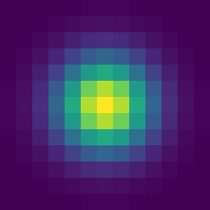
\(G,\) 13 × 13. The color scale runs from 0 to the peak.
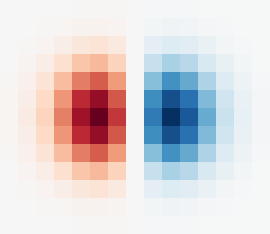
\(G*D_x,\) 13 × 15. Red is positive, blue negative.
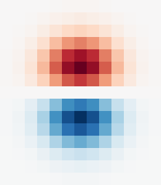
\(G*D_y,\) 15 × 13.
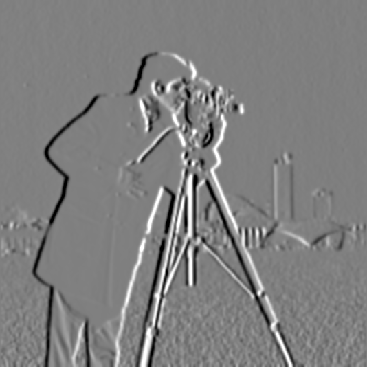
\(I*(G*D_x).\)
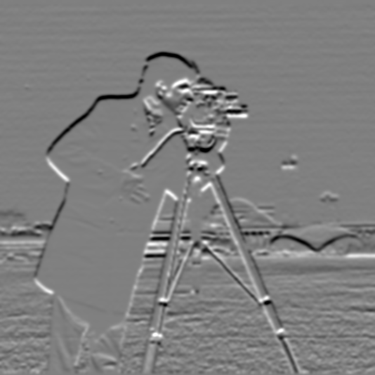
\(I*(G*D_y).\)
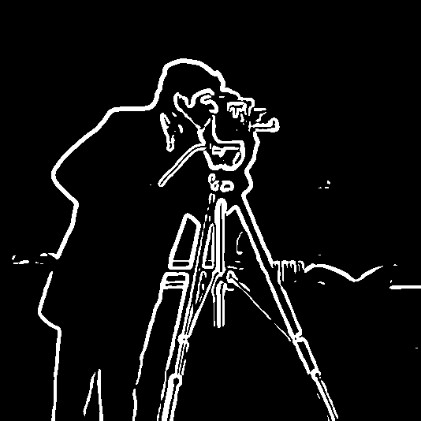
DoG edges, threshold 0.10.
Verified: same result
The two routes differ by at most 1.0 × 10⁻¹⁵ in either partial
derivative, which is floating-point round-off, and the two
thresholded edge maps are identical pixel for pixel. Mirrored
borders keep even the image border identical. A symmetric Gaussian
commutes with mirror padding, whereas zero padding would break
equality in a thin band along the edges.
Gradient orientation Bells & whistles
The orientation \(\theta=\operatorname{\text{atan2}}(\partial_y I,\ \partial_x I)\)
is computed without a library angle function:
Fold each gradient vector into the first octant: \(t = m/M \in [0,1],\) where \(m\) and \(M\) are the smaller and larger of \(|g_x|\) and \(|g_y|.\)
Evaluate an 11th-order odd minimax polynomial for \(\arctan t.\)
Unfold with \(\arctan(1/t)=\pi/2-\arctan t\) and the quadrant sign rules.
Compared with np.arctan2 (used only to check), the
largest error over all non-zero gradients is 3.4 × 10⁻⁶ rad. Hue
shows θ around the full circle, and brightness shows gradient strength.
The two are combined in HSV and converted to RGB.
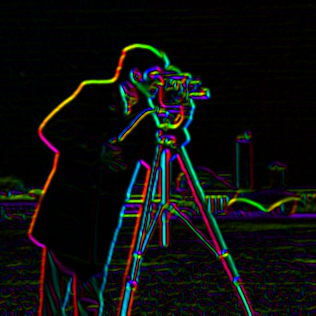
Hue is orientation, brightness is DoG magnitude.
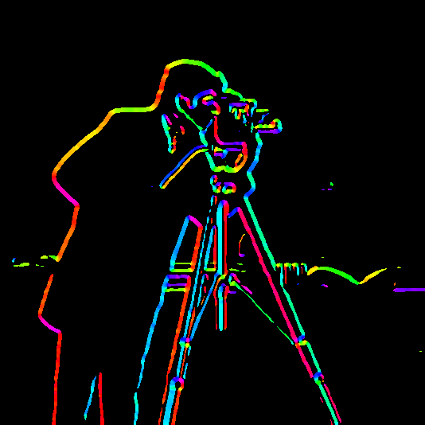
The same hue, drawn only on edge pixels.
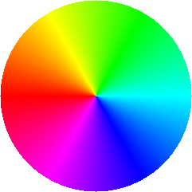
Key: the color a gradient pointing from the center toward that spot receives (y points down).
Gradients point from dark to bright, so the two sides of a thin dark
object, such as a tripod leg, get opposite hues. Straight contours,
such as the horizon and the coat's long edges, keep one steady color.
Part 2.1
Image sharpening
A Gaussian is a low-pass filter. Subtracting the blurred image from
the original therefore leaves only what the blur removed: the high
frequencies. Adding a multiple \(\alpha\) of that detail back
exaggerates edges and texture. Because every step is linear, the three
operations collapse into one kernel, the unsharp mask filter
(\(e\) is the unit impulse):
With σ = 2 (13 × 13), the single-kernel result matches blur, subtract,
and add to within 4.3 × 10⁻¹⁵.
Original.Low-pass: \(f*g.\)
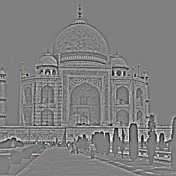
High-pass: \(f-f*g.\) Mid-gray is zero.Sharpened, α = 1.
α
α = 1: the high band is doubled. The dome's texture and the garden hedges pop, and edges stay clean.
A photograph of my own
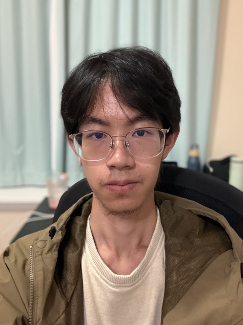
Original.Low-pass: \(f*g\)
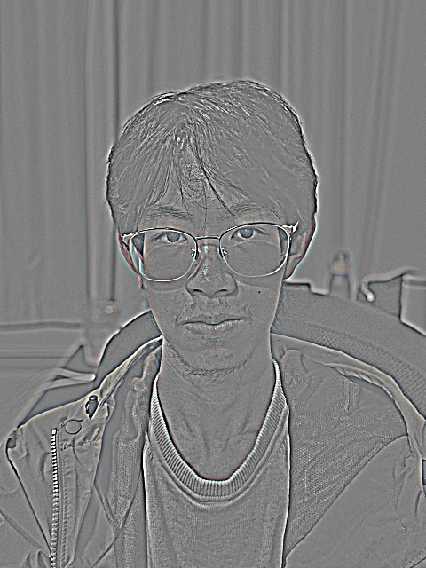
High-pass: \(f-f*g\)Sharpened, α = 1: hair and glasses frames crisper.
α = 0.5: barely different from the original.α = 2: eyelashes and stubble start to look etched.
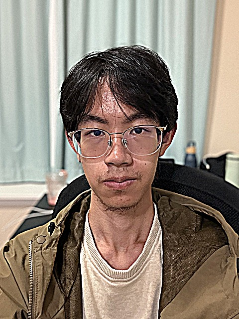
α = 4: skin texture and stubble turn harsh.
Blur a sharp photo, then sharpen it back
For the evaluation I blurred a sharp landscape with the same Gaussian
(σ = 2), then sharpened the blurred copy. The crops show the rock
outcrop at full resolution.
Version
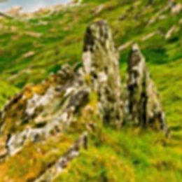
Sharpened, α = 2: the best PSNR of the set (25.62 dB). It looks crisp but is still a different image from the original.
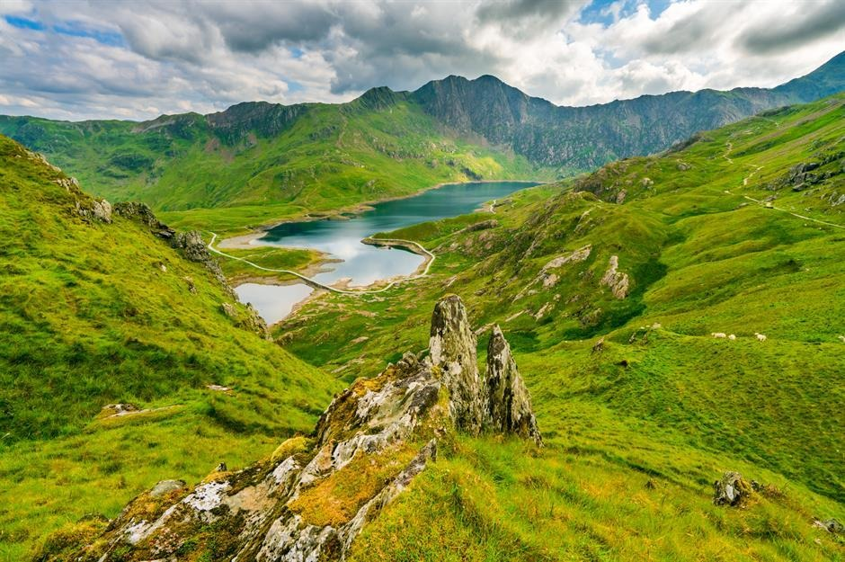
Original.Blurred, σ = 2.Blurred, then sharpened with α = 2.
Blurredα = 1α = 2α = 4
How much of each frequency survives, relative to the original. The
curves plot \(|H(f)\,((1+\alpha)-\alpha H(f))|^2\) with
\(H(f)=e^{-2\pi^2\sigma^2 f^2}.\) Measured spectra of the actual
images (Hann-windowed FFT) follow them within 2.6 dB below 0.3
cycles/px. Hover or tap to read values.
PSNR of the resharpened landscape against the sharp original
Blurred
α = 0.5
α = 1
α = 2
α = 4
24.19 dB
24.70 dB
25.12 dB
25.62 dB
24.92 dB
Observations
Sharpening makes the blurred landscape look crisp, but it does not
bring the original back. The lichen and grass blades stay gone, and
PSNR improves by at most 1.4 dB before falling again. The chart
shows why. The blur multiplies each frequency by \(H(f),\) and the
unsharp mask can only rescale what survived. It lifts the middle
band, even above the original at α = 4: about +3 dB at
0.05–0.10 cycles/px, which is exactly where the halos come from.
Where \(H \approx 0,\) no α recovers anything. At 0.25 cycles/px the
blur removed 42.6 dB, and α = 4 brings only 14 dB of it back.
Unsharp masking redistributes energy; it cannot recreate information
the blur destroyed.
Part 2.2
Hybrid images
Following Oliva, Torralba, and Schyns (2006), a hybrid keeps the high
frequencies of one image and the low frequencies of another. Up
close, the eye locks onto the sharp detail. From afar, that detail is
too fine to resolve, and the smooth image takes over.
The Gaussian's frequency response is \(e^{-2\pi^2\sigma^2 f^2}.\) I
report each filter's cutoff as the frequency \(f_{1/2}\) where the
response crosses one half. The high-pass \(1-e^{-2\pi^2\sigma^2 f^2}\)
crosses one half at the same frequency. Both images are converted to
floating point in [0, 1] before alignment. The two filtered images are
summed and clipped, with no rescaling, so the balance between the two
bands is exactly the one the filters set.
Derek and Nutmeg, step by step
Nutmeg, original (high-pass source).Derek, original (low-pass source).
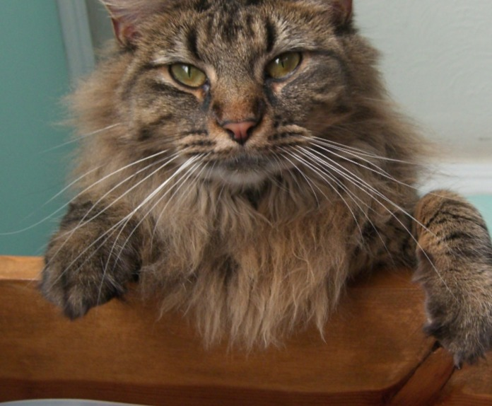
Nutmeg, aligned: eyes matched to Derek's, then cropped to the shared valid area.Derek, aligned.
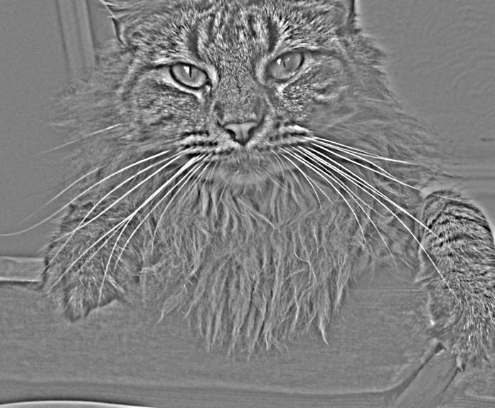
Nutmeg, high-pass (σ₁ = 5.4 px). Mid-gray is zero.Derek, low-pass (σ₂ = 9.0 px).Hybrid: the sum of the two.
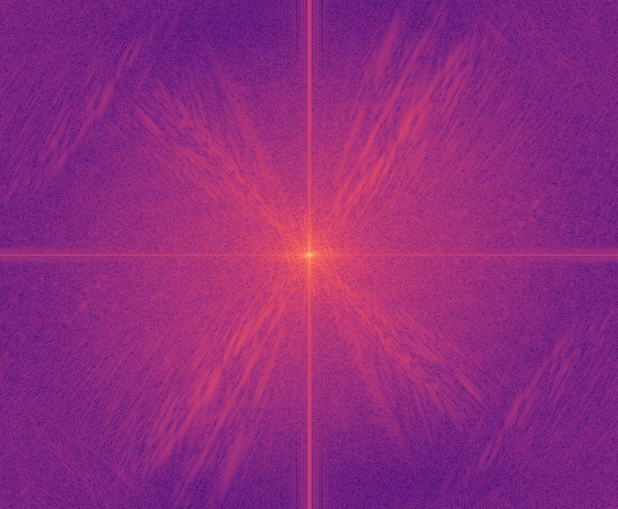
Nutmeg
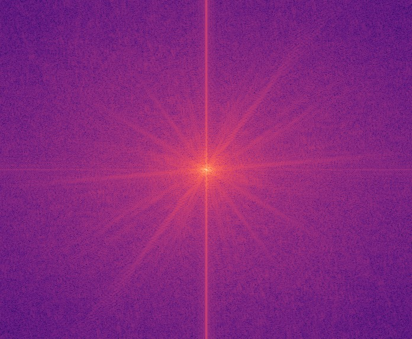
Derek
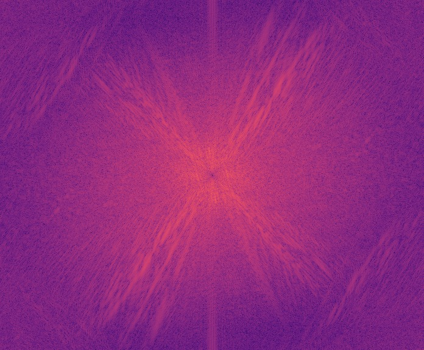
Nutmeg, high-pass
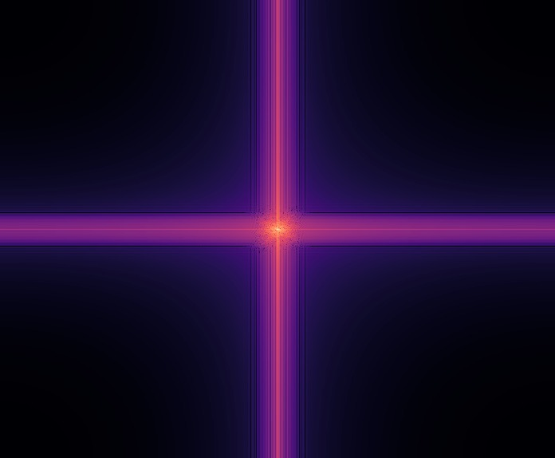
Derek, low-pass
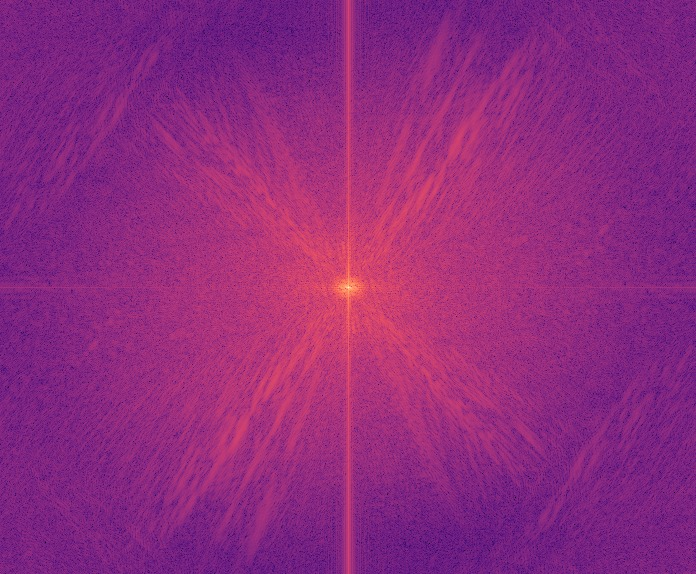
Hybrid
\(\log|\mathcal{F}|\) of each grayscale image, all on one color scale.
The high-pass digs a small dark hole at the center of Nutmeg's
spectrum, where the lowest frequencies were. The low-pass leaves only
a bright core of Derek. The vertical and horizontal streaks come from
the image border: the FFT treats the image as periodic, so the jump
between opposite edges shows up at all frequencies. The hybrid's
spectrum is Derek's core surrounded by Nutmeg's outer frequencies.
Low-pass on DerekHigh-pass on Nutmeg
Cutoff choice. The low-pass keeps Derek below about
12 cycles per image height, and the
high-pass keeps Nutmeg above about 20.
The gap between the two keeps the cat and the face from competing in
the same band. Hover or tap to read values.
Picking σ
I chose each cutoff in cycles per image height, so the same numbers mean the same thing at any resolution, and derived σ = 0.187·H/f from the 574 px aligned height. Derek keeps everything below 12 cycles (σ₂ = 9.0 px): face, hairline, and shirt, but no skin texture. Nutmeg keeps everything above 20 (σ₁ = 5.4 px): whiskers, fur, and the outlines of the eyes. I compared high cutoffs of 20, 30, and 45 against low cutoffs of 8 and 12. At 45 the cat faded even at full size, and at 20 it clearly wins up close while Derek still takes over in the small preview. The band between 12 and 20 is attenuated in both images, so the cat and the face never compete at the same scale.
Drag to shrink the image. Smaller works like farther.
More hybrids
Change of expression
Low-pass below 8, high-pass above 20 cycles per image height
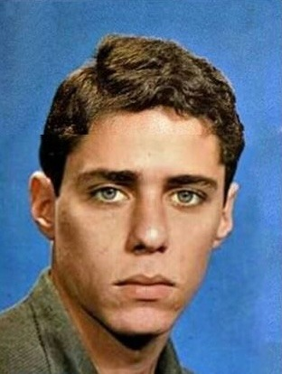
Serious, high-pass source.
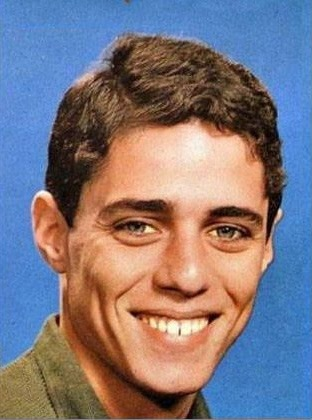
Smiling, low-pass source.
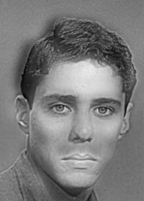
Hybrid.
The same man, photographed twice. Up close, the serious face wins: level brows, a closed mouth, sharp eyes. From a few meters away, the smile's broad shading takes over, with lifted cheeks and a bright band of teeth. Aligning the eyes also lines up the head outline, so only the mouth region really differs, and that is exactly where the two readings switch.
Change over time: the Old Summer Palace
Low-pass below 8, high-pass above 20 cycles per image height
The ruins today, high-pass source.
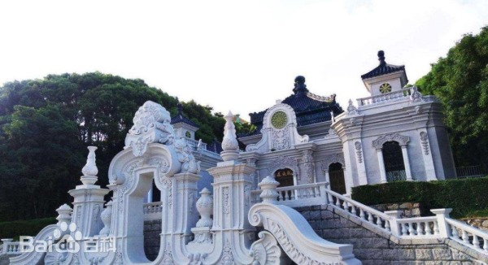
A restoration rendering, low-pass source.
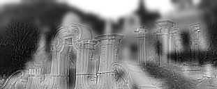
Hybrid.
Up close, the carved stone of the ruins stays sharp. From afar, the blurred, symmetric mass of the restored hall rises behind it. The effect is weaker than with the portraits. The photograph of the ruins is only 188 × 334 px, so the aligned hybrid is 128 px tall and holds little detail above the cutoff. Also, the two scenes share only the arch and the column I used for alignment.
A failure: Phoebe Chubi and Phoebe
Low-pass below 10, high-pass above 20 cycles per image height
Phoebe Chubi figure, high-pass source.
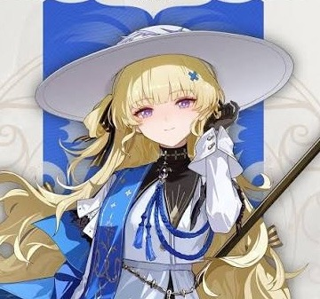
Phoebe, original art, low-pass source.
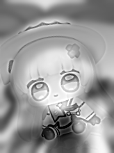
Hybrid.
Two matching eyes are not enough here. The Phoebe Chubi figure's head is most of its body, while in the illustration the head is a small part of a taller figure. Once the eyes line up, the hat, hair, and shoulders all land in different places. On top of that, the figure's strongest features are high-contrast edges that survive the high-pass at every scale: the huge eyes, the dark boots, the hat brim. The illustration's low frequencies are mostly pale background and a blue backdrop. The figure wins at every viewing distance. A hybrid needs two images that share their coarse structure, not just two landmarks.
Part 2.3
Gaussian and Laplacian stacks
A stack is a pyramid without the downsampling: every level keeps the
full 300 × 300 size. Level \(i\) of the Gaussian stack is the original
blurred with σ = 0, 1, 2, 4, 8, 16. Doubling σ each level matches a
pyramid that halves resolution per level. Each Laplacian level is the
difference of neighboring Gaussian levels, \(L_i = G_i - G_{i+1}\): a
band of frequencies about one octave wide. The last level keeps the
low-pass residual \(G_5,\) so the stack sums back to the original
exactly. The measured error is 1.1 × 10⁻¹⁶. Blurs are my own
separable Gaussian convolutions with mirrored borders; no pyramid
library functions are used.
012345
Apple, Gaussian
Apple, Laplacian
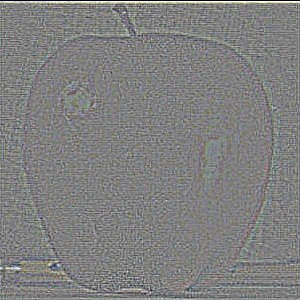
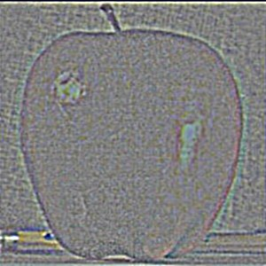
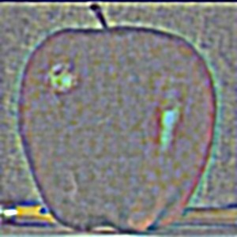
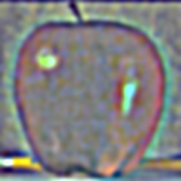
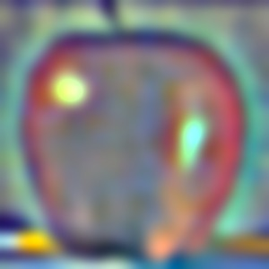
Orange, Gaussian
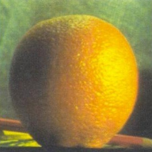
Orange, Laplacian
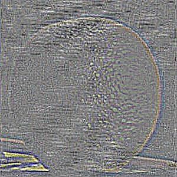
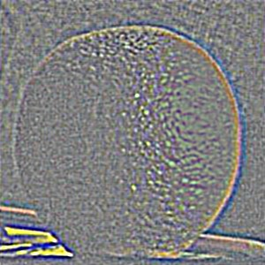
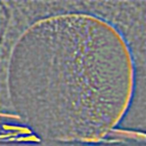
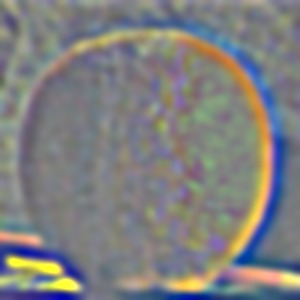
Laplacian levels are shown as 0.5 + contrast-stretched values, so
mid-gray is zero. Level 5 of the Laplacian stack is the residual
\(G_5\) itself.
Recreating Szeliski, Figure 3.42
Each row weights one Laplacian level by the smoothed mask (left: apple
side, middle: orange side) and adds the two (right). Rows show levels
0, 2, and 4: high, middle, and low frequencies. The bottom row sums
every level, which gives the masked inputs and the finished blend.
(a)(b)(c)(d)(e)(f)(g)(h)(i)(j)(k)(l)
The seam is sharp in row 0 and 16 times wider in row 4: the mask is
blurred with σ = 1 there and σ = 16 here. Each frequency band is mixed
over a transition proportional to its own wavelength. That is why no single seam width could have produced
panel (l).
Part 2.4
Multiresolution blending
Blending uses a third stack: a Gaussian stack of the mask. A stack has
no downsampling to soften a step mask, so the mask must be blurred
explicitly, following Burt and Adelson's masked algorithm. Each mask
level is one octave smoother than the image band it weights (σ = 1,
2, 4, …, 32). Every band then gets a transition as wide as its
wavelength. The blend is collapsed by summing the levels:
Apple (left half).Orange (right half).Hard cut, for contrast.Multiresolution blend, 5 levels plus the residual.
Deer and horse
Deer (left half).Horse (right half).A deer from the front, a horse from behind.
The coats are close enough in color that the coarse levels turn the
tan-to-chestnut change into a gradual shift across the body. The fine
levels switch within a few pixels, so the spots and the fluffy
versus sleek fur texture both stop along a visible vertical line. The
backgrounds match less well, and the lowest level spreads their
difference into a soft haze behind the seam.
Irregular mask: an ice-tea jersey
The mask here follows the shape of Kobe's jersey, not a line. It is
built from the photo itself:
Clean the result with a morphological opening and closing.
Keep the largest connected region.
Flood-fill from the corner to close the holes left by the lettering.
The mask covers 45.2% of the image, including the V-neck notch and the
arm holes. Four levels plus the residual are used, because the image
is only 238 px wide.
Base photo.Ice-tea bottle, same size.Mask from color segmentation.Blended: the label becomes the jersey.
Inside the blend, in the style of Burt and Adelson's Figure 10
Ice tea × MKobe × (1 − M)Sum
Level 0
Level 1
Level 2
Level 3
Residual
All levels
Hard paste with the same mask: a cut-out sticker.Multiresolution blend: the edges read as fabric, not a cut. The price is a yellow halo above the shoulders and inside the V-neck.
I blend each RGB channel with the same stacks. In grayscale the
orange half is much brighter than the apple half (mean gray 174
against 109). The blend turns that step into a ramp about 70 px
wide, which reads as light falling on one side of a single fruit,
so the grayscale oraple looks like one fruit whose skin texture
changes halfway. In color, the red-to-orange hue difference is
another very low-frequency signal. It lands in the residual level,
which is mixed over the widest mask (σ = 32), so the hue shifts
gradually instead of at a line. Color is what lets you still see
two fruits. The jersey benefits the same way: the label's
orange-gold sits close to Lakers gold, so the coarse levels only
have a small color difference to spread. The same wide coarse
masks cause the halo, though. On a 238 px image, mask blurs of
σ = 8 to 16 carry the label's yellow a few pixels past the
outline, onto the neck and the sky above the shoulders.
What I learned
Every filter in this project is a statement about frequencies, and
the spectrum explains what the pixels only show.
The DoG check made associativity concrete. Two convolutions
collapse into one, and the result is the same to 10⁻¹⁵. Sharpening
looked like magic until the transfer curve showed it only rescales
surviving frequencies, which is why a blurred photograph cannot be
un-blurred. Hybrid images and multiresolution blending use the same
idea. Treat each frequency band separately, and give each one a
transition that suits its own scale. The most practical lesson was
about boundaries: zero padding, a white frame hidden in a PNG, and
wrap-around in the FFT each created structure that was not in the
scene. It was worth looking at the edges of every image.